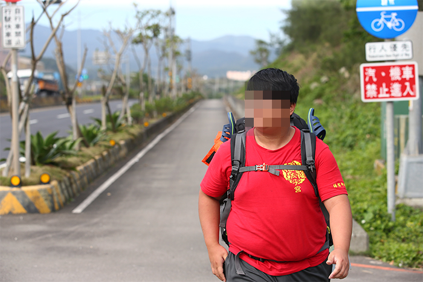
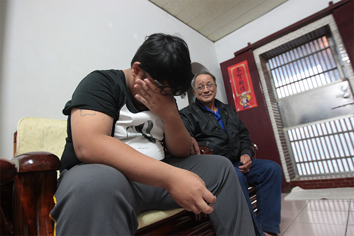
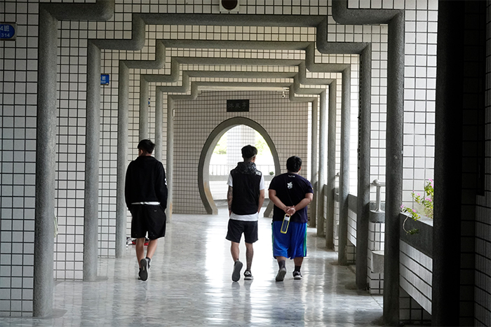

搖擺少年身上撕不下的標籤
比毒品還可怕
這段1046公里漫長的環島路程，除了小安，還有一名少年也深陷毒品掙扎中。他是小胖（化名），年僅16歲就已經吸過大麻、拉過K，透過艱辛的徒步過程找回自己，但結束環島後的人生，反而更加辛苦。
小胖，人如其名，頂著一顆渾圓的肚子，看起來一點都不耐操，他卻已經爬過百岳、扛轎30公里，對他來說要徒步環島一圈，就像出發當天他自信說的：「（環島）小意思！」
小胖說話總像個小大人，彷彿已看過人生百態，但其實他仍只是個小孩，像是誇口環島「小意思」，但其實中途他一度失蹤，原來是累到坐在路邊睡覺；在外面不敢一個人洗澡，或是明明腳痛到不行，卻因為太無聊，晚上睡前又走了好幾公里的路去打網咖。

環島對你戒毒有幫助嗎？「當然有！」小胖斬釘截鐵地說，當自己一步步走出桃園，沒有認識的人送毒品給自己，「而且每分每秒旁邊都有人陪，你要我怎麼吃，沒辦法啊！」環島讓他逐漸習慣沒有毒品的生活。
但這趟路程遠比他想像艱難，他回憶起最辛苦的一段，就是花蓮的山路，沒想過環島還要爬山，每天過度操勞的雙腳長滿水泡，每走一步就煎熬一次，但他不想輕言放棄：「環島是一生的事，10、20年後，你把這件事告訴自己兒子，他會覺得很驕傲。」
環島最大的意義，莫過於讓這群少年有時間思考自己的人生、和自己對話。小胖說，「我不想再走回頭路，想要趕快工作賺錢，為家裡負擔經濟。」他沒有夢想，只想多賺錢，讓家人過上好生活。
究竟他是如何開始這段路程？小胖娓娓道來，自己混過黑道，常幫人討債、辦桌，14歲喝下第一包毒咖啡，此後每天窩在網咖包廂吸毒，最高紀錄一天喝下17包，甚至出現幻覺看到蜘蛛人。
小胖形容，毒品幾乎無所不在，不只學校有藥頭，連住家附近的飯店都在賣藥，「他看到熟人就會拿出來，一條餅乾盒4、500元。」甚至他還在公園撿過吸毒用的針筒，「我真的沒在唬爛，椅子上就3隻，都是打完的。」
他每天渾渾噩噩地過生活，一直到16歲才被抓到。他回憶起被抓到的那天，他穿了8條褲子躲在房間，怕被爸爸抽，「結果我爸走進來說：『這次被抓後，就不要再碰了。』我當下又驚嚇又慚愧，他一走出去我直接掉淚。」

從那天開始，小胖下定決心用行動表示自己的改變，每天準時上課、下課就回家，學校驗尿也沒再驗出毒品，讓爸爸終於比較放心，「曾經碰過就好了，你再碰根本沒意義，如果上癮真的會毀了自己一生。」
環島結束後，小胖決定不繼續唸書，跟著爸爸到工地上班賺錢養家。時隔兩年半，我們再度見到小胖，他仍在打零工，他感嘆地說：「知道賺錢的辛苦，我國中沒畢業還可以做什麼？」
對他來說，回歸正常的生活，最辛苦的不只是賺錢，還有外界的刻板印象，「我曾經被罵，吃藥是社會底層的人才在做的事，我真的不知道該說什麼。」

「我總是很誠懇說以前做錯事，現在剛出來重新開始，希望可以給我機會，但反而不被認同。」另一位也曾參與徒步環島的小逸（化名），從矯正機構出來，也同樣被貼上撕不下的標籤，好長一陣子都沒找到工作。
「很多人找不到工作，沒辦法生活，就只能走以前的路。」他坦言，有人找他做詐騙、分裝毒品，一天賺上萬元，即便他全都堅持住，社會卻不如想像中友善，好不容易找到電焊學徒工作機會，卻受到師傅百般刁難。
「如果我家環境很好，我也會好好念書、好好念大學，過一般正常人的生活。」小逸說，家裡經濟狀況差，讓他為了賺錢走上不歸路，如今自己想改變卻困難重重。
高中沒畢業的小逸，努力唸書考到保險證照，卻苦無業績，目前只能靠著當外送員餬口，但依舊很認真地生活，「我每天跟自己說，搞不好努力會有更好的轉變。」